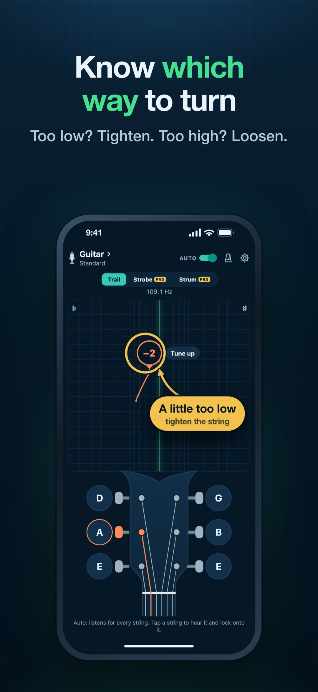

How to tune a guitar with your phone (step by step)
Standard tuning is E A D G B E, from the thickest string to the thinnest. To tune with your phone, open a tuner app, pluck one string at a time, tighten the peg if the tuner says the string is too low (flat) and loosen it if it's too high (sharp), always finishing by tuning up to the note.
You don't need a clip-on tuner for this. A tuner app does the same job as long as the room is reasonably quiet. Below is the whole routine, plus the two things that trip up most beginners: which way to turn the peg, and why a guitar that was in tune five minutes ago isn't anymore.
Standard tuning notes
Guitar strings are numbered from the thinnest to the thickest. String 1 is the thin high E, and string 6 is the thick low E. When you hold the guitar to play, string 6 is the one nearest your face, which is confusing at first: the "low" string sits on top. It's called low because it sounds lowest.
| String | Name | Note | Frequency |
|---|---|---|---|
| 6 (thickest) | Low E | E2 | 82.41 Hz |
| 5 | A | A2 | 110.00 Hz |
| 4 | D | D3 | 146.83 Hz |
| 3 | G | G3 | 196.00 Hz |
| 2 | B | B3 | 246.94 Hz |
| 1 (thinnest) | High E | E4 | 329.63 Hz |
The number after each note is the octave, so the two E strings are both E, two octaves apart. The frequencies assume the usual reference of A4 = 440 Hz, which is what every tuner uses unless you change it.
To remember the order from low to high: Eddie Ate Dynamite, Good Bye Eddie.
Which way to turn the tuning peg
The pegs (also called tuners or tuning keys) wind the string around a metal post. Tightening a string raises its pitch. Loosening it lowers the pitch. That part is the same on every guitar.
Which way you turn the peg to tighten depends on which side of the headstock it's on. Most acoustic guitars, and plenty of electrics, have three pegs on each side. The two sides are mirror images, so turning a peg clockwise tightens the strings on one side and loosens the strings on the other. If your guitar has all six pegs in a row on one side, they all turn the same way.
So rather than memorizing a direction, use this:
- Watch the post, not the peg. When you tighten, more string winds onto the post. When you loosen, string comes off it.
- Turn a little while the string rings. A quarter turn or less, with the tuner open. If the reading moves away from the target, turn the other way.
- Follow the string before you turn. Trace it from the nut up to its peg. Cranking the wrong peg is the easiest way to snap a string.
In Big Tuna: the tuner draws your headstock with each string at its own peg and lights up the one it hears, so you can see which peg to reach for. If your guitar is left-handed, turn on Left-handed in Settings to mirror it. And if you start turning the wrong way while a string rings, the label next to the reading changes to Other way!
How to tune a guitar with your phone, step by step
- Find a quiet spot and open the tuner. Turn off the TV or music. Open the tuner app, allow the microphone when it asks, and pick Guitar, Standard tuning.
- Hold the phone close to the guitar. Within about a foot of the strings is plenty. The main microphone is usually on the bottom edge of the phone, so point that end at the guitar and keep your hand or case off it.
- Pluck one string and let it ring. Start with string 6, the low E. Pluck it firmly once and let it ring. Rest a finger lightly on the other strings so they stay quiet.
- Read whether it's flat or sharp. Tuners measure how far off you are in cents (100 cents is one fret). Flat, or a minus number, means the string is too low: tighten it. Sharp, or a plus number, means it's too high: loosen it.

- Turn the peg in small steps, and tune up to the note. Turn a little at a time while the string rings, and pluck again as the sound fades. Always finish by coming up to the note. If you're sharp, loosen until you're a bit below the note, then tighten back up to it. (More on why below.)
- Stop at in tune, then move to the next string. When the reading sits at or near zero and the tuner says in tune, move on: A, D, G, B, then high E.
- Go through all six strings again. Tuning one string shifts the tension on the neck slightly, which nudges the others. Do a second pass and touch up anything that moved.

In Big Tuna: with Auto switched on, it listens for every string and picks out the one you plucked. To work on a single string, tap it on the headstock: it plays that string's note and locks the tuner onto it. When you're sharp, the hint at the bottom reads "Tip: go a little under the note, then tune up to it." Once all six land in tune, it says "All strings in tune. Go play!"
Why you always tune up to the note
The gears inside a tuning peg have a tiny bit of play in them, and the string can catch where it crosses the nut. When you come down to a note, that slack is left loose, and it tends to let go after a few minutes of playing, so the string drifts flat. When you come up to the note, the gear and string are both pulled snug and the tuning holds.
So if you overshoot and end up sharp, don't just back off to the note. Go a little below it, then bring it up.
Why the second pass matters
The strings pull on the neck with a lot of combined tension. Change one and the neck flexes very slightly, which moves the others a little. On a guitar that was only slightly off, the second pass is usually quick. It matters most after big changes, like new strings or switching tunings, and on guitars with a floating tremolo bridge, where all the strings are balanced against springs and every adjustment moves the rest. Those can take three or four passes.
New strings keep going flat
That's normal. New strings stretch for the first few sessions, and every bit of stretch makes them a little flat. You can speed it up:
- Tune the string to pitch.
- Pull it gently away from the fretboard a few times, moving along its length. Don't yank it.
- Retune. It will have dropped.
- Repeat two or three times, until it stops dropping much.
Expect to touch them up more often than usual for a few days anyway.
When the tuner won't read your string
- Check the microphone permission. If you tapped "Don't allow" the first time, the tuner can't hear anything. Turn microphone access back on for the app in your phone's settings.
- Close anything else using the mic. A call, a voice memo or another recording app can hold onto it.
- Get closer and pluck firmer. An unplugged electric guitar is quiet, so hold the phone right by the strings.
- Pluck away from the bridge. Plucking right next to the bridge gives a thin sound with lots of overtones. Over the soundhole, or nearer the neck on an electric, gives a cleaner note to read.
- Quiet the other strings. Open strings ring along with each other. Rest a finger on the ones you aren't tuning.
- Get a very loose string close first. If a string is way off, say a brand-new one, the tuner may read it as a different string or the wrong octave. Bring it up roughly by ear, or tell the tuner which string you're tuning. In Big Tuna, if you're locked onto one string and pluck another, it says "Sounds like" and the note it hears instead of telling you to tighten.
- Check the tuning and the calibration. Make sure Standard is selected and not, say, Drop D. And leave the calibration (A4) at 440 Hz unless you're playing along with a band or recording tuned somewhere else.
Cross-check by ear: the 5th-fret method
Once your low E is right, the 5th fret of each string plays the same note as the next open string. That gives you a way to check your tuning by ear, or to tune the other strings to the low E when there's no tuner around:
- Low E string, 5th fret = open A
- A string, 5th fret = open D
- D string, 5th fret = open G
- G string, 4th fret = open B
- B string, 5th fret = open high E
The G to B pair is the exception because those two strings are only four frets apart. Play each pair one after the other, or let them ring together. When they match, they blend into one steady sound. When they're a little off, you'll hear a slow wobble that speeds up the further apart they are.
Small errors add up as you go from string to string, so this works best as a check after using the tuner rather than a replacement for it.
Read next
The Big Tuna - Guitar TunerFree tuner for guitar, bass, ukulele and 12 more instruments. No ads, no account. Coming to the App Store and Google Play; Android testers can join the beta.